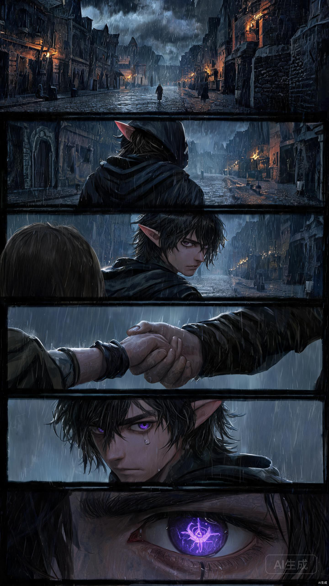
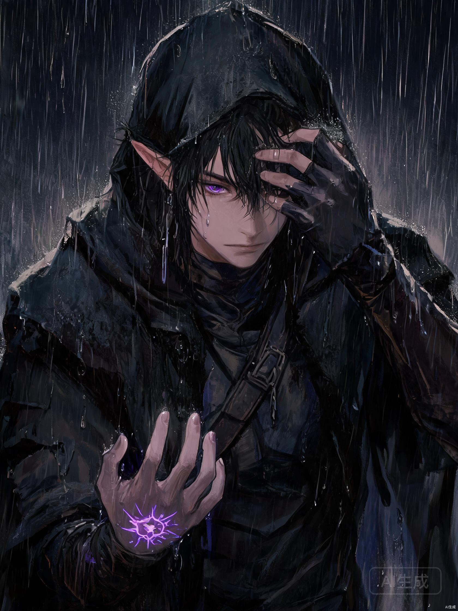
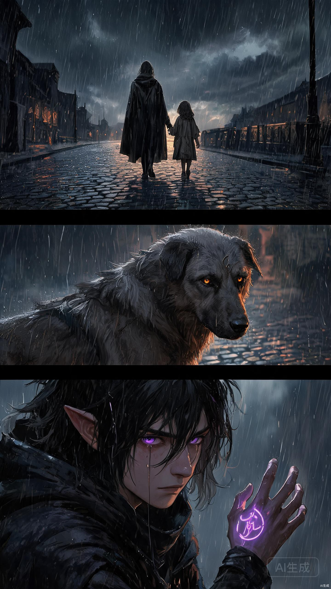
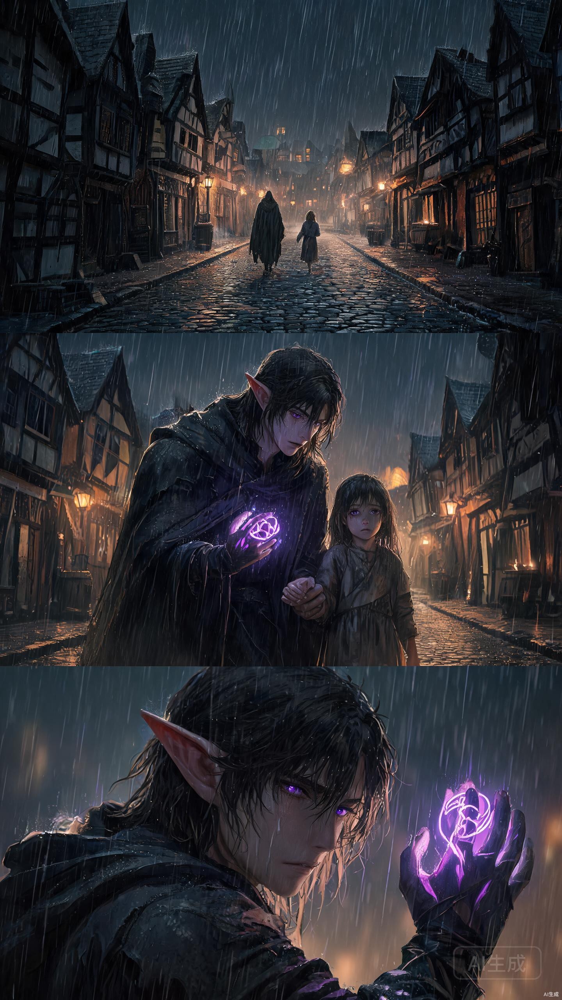

条漫 = 照顾手机用户的竖屏叙事。每一格 = 手机一屏刚好读完的一格（单格高度 ≈ 屏幕高度，短、快、一屏一镜）。读者滑一下 = 读一格 = 一个叙事节拍，大量快速切换营造"滑手机"的沉浸流。单格必须短，一格做超长 = 页漫思维，违背竖屏叙事逻辑。




| 维度 | 规范 |
|---|---|
| 单格形态 | 横宽矩形（宽:高 ≈ 3:1 ~ 2.5:1），非竖长格 |
| 整体比例 | 极端纵向（约 1:4），单屏 1-2 格 |
| 边框 | 去边框化，靠色彩对比/人物轮廓/共享背景自然分界 |
| 格间衔接 | 共享天空/地面/光影，背景连续性优先 |
| 节奏锚点 | 对话气泡链（Z字形阅读路径），对话格=节拍器 |
| 镜头语法 | 景别递进（远→全→近→特），越轴强化对峙，信息延迟释放 |
| 单格高度 | ≤一屏，关键信息居中 |
| 核心本质 | 时间可视化：向下滚动=时间推进，线性不可逆 |